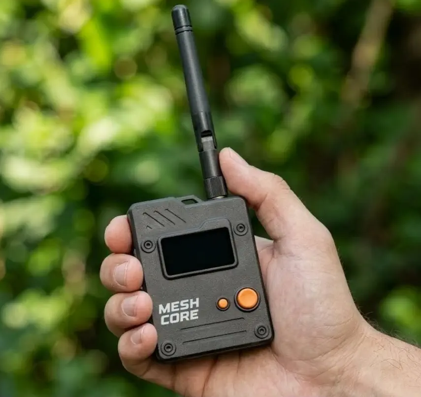
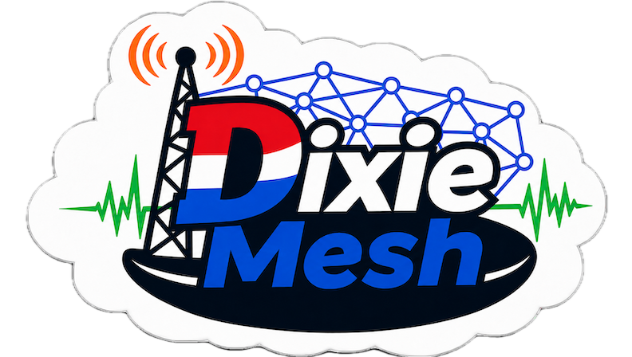
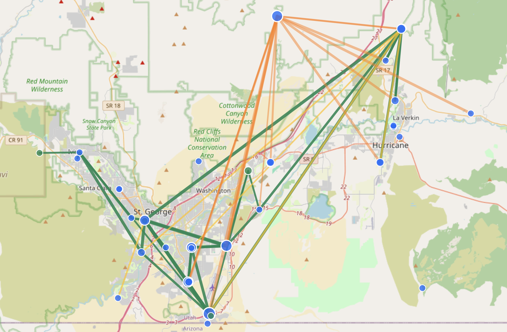

01 · Flood routing
No path knownThe first direct message spreads through eligible repeaters. Its delivery report gives the sender route information.
A simple, secure, off-grid, mesh communications system.
Antennas, terrain, link budgets, and good operating practice still rule.
Short text, positions, and telemetry from low-cost battery-powered nodes.
No cell service, Wi-Fi, internet connection, or even commercial power required.
LoRa carries text and telemetry without internet, Wi-Fi, or a central telecom service.
Messages travel directly or through independently powered repeaters.
Companion devices do not repeat every packet, which protects battery life and shared airtime.
The firmware supports companion, repeater, room-server, and sensor roles across many LoRa devices.

LoRa is the physical-layer modulation, not the messaging system. Chirp spread spectrum trades speed for sensitivity, range, and power efficiency.
On an SDR waterfall: diagonal energy moving across the channel, not FM, SSB, APRS, RTTY, or packet.
A very efficient whisper that can travel a long way—if everyone takes turns.
331 km · Meshtastic ground-to-ground record
1,336 km · Fishing vessel to Canary Islands gateway
Record paths are exceptional. Ordinary range still depends on height, line of sight, antennas, radio settings, and propagation.
Within the U.S. 902–928 MHz band. Dixie Mesh also uses 62.5 kHz bandwidth, SF7, and CR5.
The first direct message spreads through eligible repeaters. Its delivery report gives the sender route information.
Later direct messages carry the learned path. Only matching repeaters relay, reducing unnecessary airtime.
If a known path fails, MeshCore can fall back to flood routing and learn a new path.
Pairs with a phone or computer, or runs standalone. Sends and receives messages without acting as a general repeater.
Lives high, hears far, and forwards traffic along useful paths. Repeaters form the coverage backbone.
Works like an off-grid bulletin board, letting users share posts and retrieve unseen history after returning to coverage.
Battery life varies with firmware, peripherals, radio duty cycle, transmit power, temperature, and traffic. Measure the finished node.
Short, actionable message
Known path or discovery
Destination accepts packet
The sender receives protocol-level confirmation that the destination received the direct message.
Treat delivery as unresolved: retry, rediscover the path, or use another communications layer.
An ACK confirms receipt by the device, not comprehension, action, or identity beyond your contact and key procedures.
Companion nodes stay quiet. Dedicated repeaters carry the backbone.
A Southern Utah community LoRa mesh network powered by MeshCore.


30+ repeaters
30+ companions
4 room servers
77 unique nodes
40,000+ signal observations
18 active channels
3.2 average hops
10.3 mi average hop
23.4 mi maximum hop
Snapshot supplied August 5, 2026. The network continues to grow.
LoRa mesh will not replace repeaters, HF, APRS, Winlink, or ARES. It adds an encrypted text and telemetry layer to the toolbox.
From the development team
Reliable messaging and packet delivery
Minimal RF traffic
Ideally avoiding connecting to the internet
MIT licensed to allow anyone to do what they want with the firmware
Provide useful tooling to make mesh network deployments easy
Consistent experience across Android, iOS, Windows, and macOS
| Topic | Meshtastic | MeshCore |
|---|---|---|
| Relay role | Client nodes may rebroadcast | Companions stay quiet; repeaters relay |
| Routing | Managed flood routing | Flood discovery, then direct paths |
| Hop ceiling | 3 by default, up to 7 | Up to 64 with one-byte paths |
| Internet link | MQTT is supported | RF-first; no official backhaul |
| Best fit | Quick and casual networks | Planned local backbone |
One-to-one messages or a group conversation across the repeater network.
Position and short updates for events, hikes, or search teams.
Battery voltage, weather, tank levels, and other small sensor reports.
Friends, family, and neighborhoods when cell and internet service are down.
Small commands for field hardware such as a relay or water pump.
Propagation, antennas, routes, and network design in real terrain.
With LoRa, the receive side is the surprise. Useful packets can arrive below the noise floor.